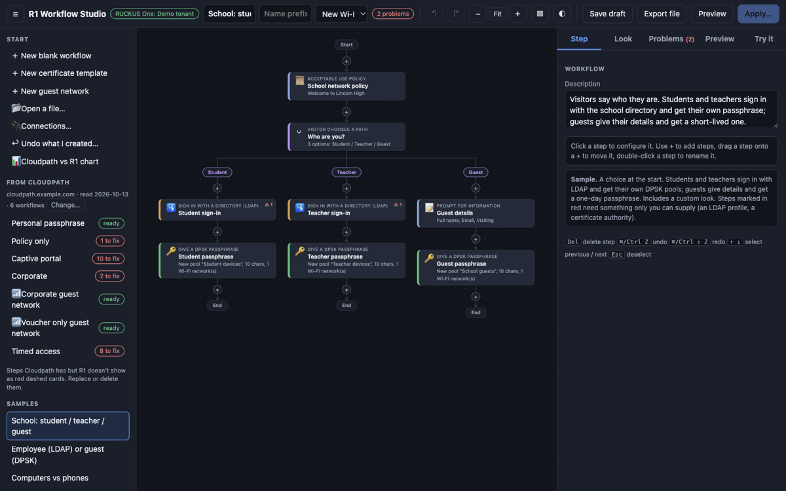

R1 Workflow Studio
By Terry Henry
Design RUCKUS One enrollment workflows visually, or read them out of Cloudpath and convert them. A desktop app for macOS and Windows.
Key features
- Build workflows without code. Add steps, split visitors by choice or by device, configure DPSK pools, certificates and guest networks, and click through the result as a visitor (Try it) before anything exists.
- Nothing happens until you say so. Preview shows exactly what would be created; Apply needs the workflow's name typed to confirm. It only creates new things (never edits or deletes what's already in RUCKUS One), creates workflows unpublished, and Undo removes what it made.
- Open what you already have in RUCKUS One as an editable copy.
- Convert Cloudpath. Enter a Cloudpath address and admin sign-in and it reads every workflow (read-only, password never saved), converts them, explains each step that can't convert, and charts what converts and what doesn't. Vouchers and sponsor requests become guest networks automatically.
- Export/Import workflows - For the very first time, backup your workflows and share with others!
- Private by design. Runs only on your computer; API secrets are stored encrypted by the operating system.
Featured in The RUCKUS Vibe, November 2026.